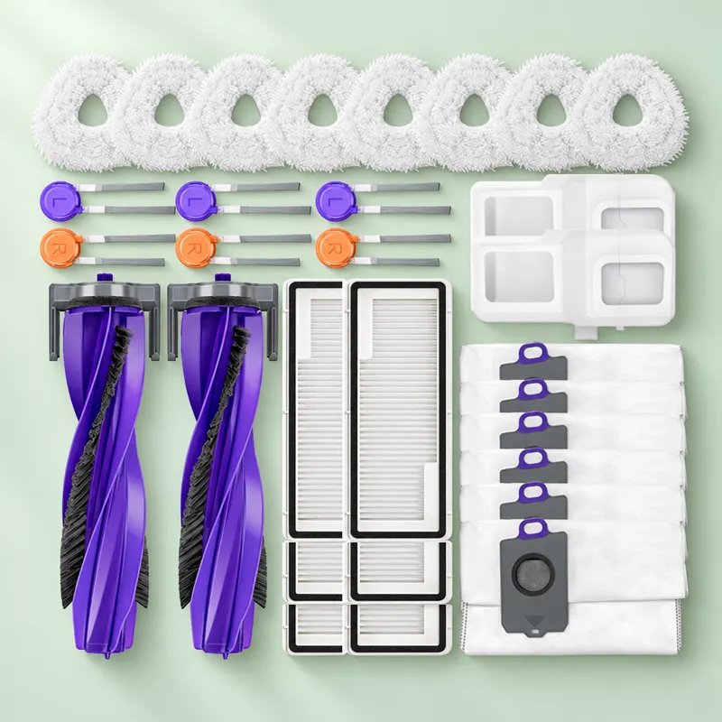

나르왈 (Narwal)
삼각 모서리 물걸레 패드 밀착력 살리는 나르왈 프레오 Z10 울트라 1년 세트 교대 루틴
글·구성: 제이상점 · 기종별 1:1 호환 실물 점검 · 교체 주기 비교표 · 스마트스토어 패키지 안내

핵심 관리 · 선택 체크포인트
- 모서리가 둥근 삼각형 물걸레 패드가 회전하며 바닥을 닦아내는 나르왈 프레오 Z10 울트라는 도톰한 패드 볼륨감과 스테이션 더스트백의 위생적인 교체가 관리의 핵심입니다.
- 보라색 당김 고리 더스트백 교체와 원추형 스파이럴 브러시 점검: 프레오 Z10 울트라의 다크그레이 칼라 더스트백은 상단 보라색 당김 고리를 당기면 입구가 자연스럽게 닫히며 위생적으로 분리됩니다.
- 나르왈 프레오 Z10 울트라 1년 세트 핵심 소모품 점검표: 삼각 물걸레부터 퍼플 고리 더스트백까지 프레오 Z10 전용 규격 확인표입니다.
- 보유 기종이 나르왈 프레오 Z10 울트라인지 확인한 뒤 상세페이지에서 1년 세트를 선택해 주세요.
- 원목 서랍 정리함 분류 수납과 베란다 통풍 매트 건조: 밝은 오크 원목 서랍에 보라색 고리 더스트백 3매와 삼각 걸레 패드, 화이트 프레임 필터를 나란히 정리해 두면 주말 점검이 5분 만에 끝납니다.
실물 부품 디테일 · 관리 구성 이미지


부품 규격 · 점검 기준표
| 부품 구분 | 프레오 Z10 울트라 전용 규격 | 교체 및 관리 포인트 |
|---|---|---|
| 둥근 삼각 물걸레 패드 | 삼각 센터홀 화이트 플러시 극세사 패드 | 세척 후 베란다 매트에서 완전 건조하며 2매 동시 교체 |
| 퍼플 고리 더스트백 | 다크그레이 칼라 + 보라색 당김 고리 봉투 | 습기 많은 계절에는 완전히 차기 전 여유 있게 교체 |
| 원추형 브러시·화이트 필터 | 퍼플·블랙 스파이럴 브러시 + 화이트 프레임 필터 | 필터 24시간 그늘 건조 교대 및 브러시 끝단 먼지 제거 |
💡 교체 주기가 겹치는 필터·브러시·물걸레·더스트백은 단품 배송비를 여러 번 내기보다 나르왈 프레오 Z10 울트라 기간별 세트(3개월·6개월·1년)로 미리 구비해 두면 물세척 후 24시간 교대 건조까지 끊김 없이 관리할 수 있습니다.
자주 묻는 질문 (FAQ)
Q. 삼각 모서리의 둥근 삼각 물걸레 패드 규격과 관리 기준은 무엇인가요?
A. 삼각 센터홀 화이트 플러시 극세사 패드 규격을 사용하며, 세척 후 베란다 매트에서 완전 건조하며 2매 동시 교체 기준으로 점검·교체하면 청소 효율을 안정적으로 유지할 수 있습니다.
Q. 삼각 모서리의 퍼플 고리 더스트백 규격과 관리 기준은 무엇인가요?
A. 다크그레이 칼라 + 보라색 당김 고리 봉투 규격을 사용하며, 습기 많은 계절에는 완전히 차기 전 여유 있게 교체 기준으로 점검·교체하면 청소 효율을 안정적으로 유지할 수 있습니다.
Q. 삼각 모서리의 원추형 브러시·화이트 필터 규격과 관리 기준은 무엇인가요?
A. 퍼플·블랙 스파이럴 브러시 + 화이트 프레임 필터 규격을 사용하며, 필터 24시간 그늘 건조 교대 및 브러시 끝단 먼지 제거 기준으로 점검·교체하면 청소 효율을 안정적으로 유지할 수 있습니다.
제이상점 1:1 검수 추천 패키지 · 구매 안내
![[호환] 나르왈 프레오 Z 울트라 소모품 물걸레 더스트백 브러쉬 필터 제이상점 1년 패키지](../../assets/img/narwal-freo-z-ultra-product-52ea4eea.webp)
함께 많이 찾는 보충 구성
대표 구성 참고가 62,400원대 (옵션·쿠폰별 스마트스토어 결제 화면 기준)
1년 세트 (세제 미포함)6개월 세트 (세제 미포함)3개월 세트 (세제 미포함)
☑️ 주문 전 확인해 두면 좋은 제이상점 안심 포인트
· 기종별 1:1 전용 규격 검수: 모델명·연식에 맞는 호환·정품 구성을 검수해 오주문 불안을 줄였습니다.
· 해외직배송 미리 주문 팁: 중국 구매대행·해외직배송 상품이므로 마지막 여분 1개를 꺼내 쓰는 시점에 개인통관고유부호와 함께 여유 있게 주문해 두시면 훨씬 경제적인 비용으로 끊김 없이 교체하실 수 있습니다.
· 기종별 1:1 전용 규격 검수: 모델명·연식에 맞는 호환·정품 구성을 검수해 오주문 불안을 줄였습니다.
· 해외직배송 미리 주문 팁: 중국 구매대행·해외직배송 상품이므로 마지막 여분 1개를 꺼내 쓰는 시점에 개인통관고유부호와 함께 여유 있게 주문해 두시면 훨씬 경제적인 비용으로 끊김 없이 교체하실 수 있습니다.
📖 더 많은 가정 내 사용 스토리와 상세 후기가 궁금하시다면
📱 네이버 블로그 모바일 원문 보기 ↗